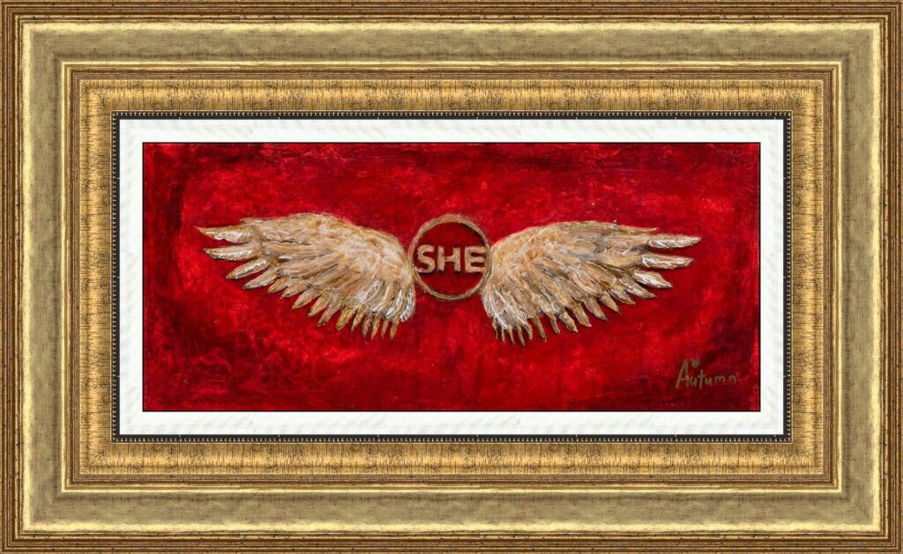

The Power of She 2

In “The Power of She 2,” Autumn de Forest delivers a bold, visual manifesto on female empowerment. Created as part of her celebrated collection unveiled for International Women’s Day 2020, this piece serves as a rallying cry for women’s leadership and resilience.
The artwork is dominated by a rich, textured crimson background—a color chosen to symbolize passion, courage, and vitality. At the center sits the word “SHE,” enclosed in a circle that evokes the iconography of a superhero emblem. Sprouting from this core identity is a pair of magnificent, metallic-hued wings. These wings suggest that when a woman embraces her true self, she possesses the power to rise above challenges and elevate those around her.
This piece is a departure from de Forest’s more whimsical imagery, moving into the realm of iconic Pop Art. It was designed not just as a painting, but as a symbol to inspire young women to harness their potential—a mission central to Autumn’s work with the “Turnaround Arts” program and her global humanitarian efforts.
Artwork Details:
- Medium: Mixed Media / Acrylic on Canvas
- Style: Pop Art / Symbolism / Feminist Art
- Context: Part of the “Power of She” collection released for International Women’s Day 2020
- Key Elements: “SHE” emblem, metallic wings, deep red texture
- Signature: Hand-signed by the artist (Bottom Right)
- Dimensions
- 10 in x 23 in
- Reg. / Lot No.
- 889131.0029